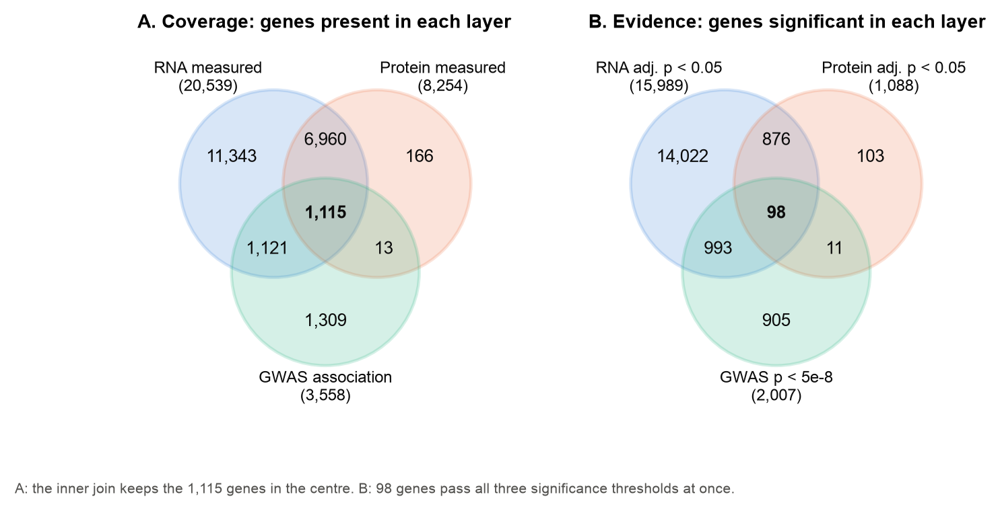
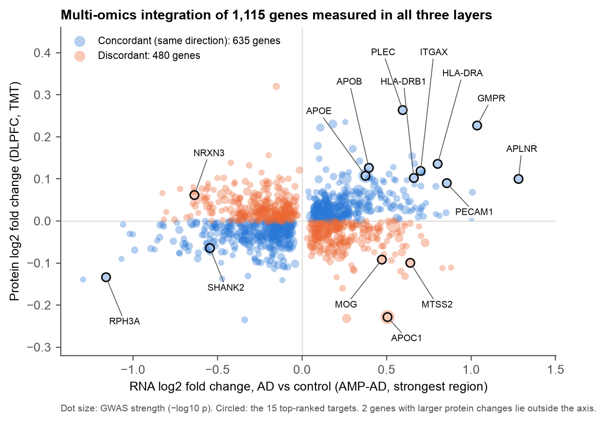
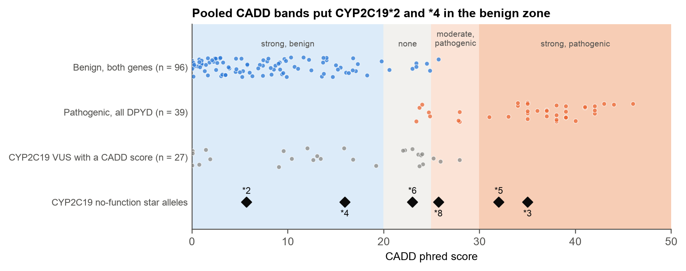

Is everything working, and what does a database say about APOE?
I set up the biot6900 environment, translated a short DNA sequence with BioPython and sent my first queries to PubMed, UniProt, the PDB and the GWAS Catalog. The last query was rs7412, a variant in APOE, the gene with the largest single effect on Alzheimer's risk. APOE comes back in most of the later modules.
Which genes change in Alzheimer's at the RNA, protein and DNA level?
I combined three kinds of public data: brain RNA and brain protein from AMP-AD (Agora), and published Alzheimer's GWAS results. I kept the genes measured in all three and gave each one a combined score. Known Alzheimer's genes came out near the top, which made me more confident the method works.


Which of my 15 genes look like proteins a drug could act on?
Being linked to a disease doesn't make a gene a drug target. I used protein language model embeddings to compare my 15 proteins with proteins that already have drugs, and to ask whether a small molecule or an antibody would suit each one better. Then I re-ranked the list.
How my ranking changed
Each line joins a gene's Module 2 rank (left) to its final rank (right). Hover or tap a gene to see its drug-type scores.

Do my two lead targets have a place where a drug could bind?
I took ITGAX (better suited to an antibody) and APLNR (my best small-molecule candidate), checked how confident AlphaFold was about each part, compared them with structures solved in the lab and searched for pockets with fpocket.

My shortlist of Alzheimer's targets
For Portfolio 1 I put Labs 2 to 4 together into one report and ranked five targets across all three kinds of evidence.
small molecule
A confident pocket where a real drug binds.
antibody
RNA and protein both up; confident domains but no reliable pocket.
antibody
Strongest antibody prior (0.88); structure not assessed.
antibody, exploratory
Strong genetics (−log10 p 22.5).
exploratory
The strongest known gene, but it looks like no drugged protein.
Can variant-effect scores classify CYP2C19's uncertain variants?
This module moved from finding targets to how patients respond to drugs, using the assigned gene CYP2C19, a liver enzyme that switches on the heart drug clopidogrel. I calibrated CADD scores against known labels and tried to reclassify the variants of uncertain significance (VUS). The scores put CYP2C19's own known broken alleles in a "benign" band, so I didn't trust them and left every VUS as it was.

Does an Alzheimer's risk score work equally well across ancestries?
I came back to APOE as part of a published 22-SNP Alzheimer's risk score (PGS000334) and applied it to 2,336 real genomes from five ancestry groups. The disease labels were simulated by the course, so the AUCs illustrate the problem rather than measure real risk.
AUC by ancestry
0.5 is chance. Switch between the full score, the score without its two APOE SNPs, and APOE e4 alone.